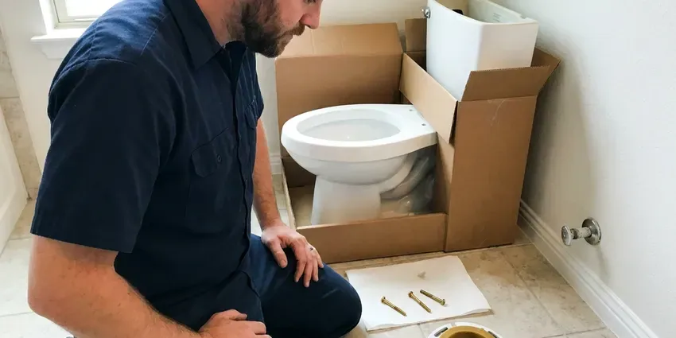

Shower Repair in Jamestown, ND
Cold blasts when someone flushes, a head that sprays sideways, a drain that holds water. Our plumbers in Jamestown, ND handle every one of those.
- Leak Detection Available
- Workmanship Guarantee
- Licensed and Insured
- Tile Protected During Work
A Shower That Shuts Off All the Way, Jamestown, ND
Our trucks carry common Moen and Delta cartridges.
Shower Repair in Jamestown, ND
HPN Plumbing also tracks down leaks behind shower walls and under pans before they turn into mold or rot. We use a moisture meter on the wall and ceiling below, and a flood test on the pan, to tell a valve leak from a grout or drain leak. You see the readings yourself. You get a flat price before work begins.
Work we handle every week:
- Shower Drain Snaking and Repair
- Pan and Wall Leak Detection With Moisture Meters
- Moen, Delta, Kohler and Pfister Cartridges

Additional Bathroom Plumbing Services in Jamestown, ND
From toilets to showers, our bathroom plumbing team in Jamestown, ND repairs, installs, and replaces every fixture with clean, code-compliant work.



Toilet Installation in Jamestown


Customers
Why Choose HPN Plumbing for Shower Repair in Jamestown, ND?
You hear the price before we start. Once the trim is off, you get one flat price for parts and labor, and it holds once work begins. The number stays put.
- Flat Pricing, You get a flat price before any repair starts.
- Licensed Plumbers, Our plumbers are licensed and insured and keep up with code changes.
- Scald Protection, We set the limit stop so hot water stays at a safe level.
Citywide Coverage
Wherever you are in Jamestown, we can usually be there within a day. Active leaks get priority, and we walk you through shutting the water off while we drive over. Do not wait on a ceiling stain.
Experienced Team
Every plumber on our crew is licensed. New hires ride along on valve and leak jobs before they work alone, which is where they learn to read a cartridge and spot an old leak behind the trim. It is not a quick lesson.
Safety-First Approach
Wall openings stay small. When we have to open a wall to reach a valve, we cut a clean access panel from the closet or back side when possible, so the tile stays untouched. We seal it properly.
Trusted Certified Jamestown Plumbing Services Professionals
At HPN Plumbing, we take pride in licensed, certified plumbing services throughout Jamestown, ND. Those papers on the wall mean something. Every repair, install and maintenance visit follows strict safety and quality rules, and the plumbers doing the work carry recognized industry credentials.
Call Us Now PHCC Plumbing Contractor Recognition
PHCC Plumbing Contractor Recognition Better Business Bureau (BBB) Accreditation
Better Business Bureau (BBB) Accreditation Angi Certified Pro
Angi Certified Pro ISO 9001 Quality Management Certification
ISO 9001 Quality Management CertificationShower Repairs We Handle in Jamestown, ND
Moen and Delta Shower Repair in Jamestown, ND
Moen 1222 and Delta RP46074 cartridges sit inside a huge share of the showers we open. The Moen 1222 runs the Posi-Temp line, and the Delta RP46074 runs the Monitor 13 and 14 series, and both wear out on a schedule you can almost set a calendar by. Both ride on our trucks. Original owners can often get the cartridge free under warranty.

Shower Valve Replacement in Jamestown
Temperature that swings or a handle that fights you points to the valve. When the body is corroded or the brand stopped making cartridges for it, we replace the valve, usually through a small access panel behind the shower wall so the tile stays put. New valves include pressure balancing. Thermostatic valves are an option if you want exact temperature control.
Shower Handle Leak Repair in Jamestown
Leaks at the handle or behind the trim plate are easy to miss. Water leaking behind the trim slips into the wall cavity at the valve opening and soaks the drywall while the tile face stays dry. The trim comes off first. Worn O-rings or a loose bonnet nut are the usual cause.
Low Shower Pressure Repair in Jamestown, ND
Low pressure at the shower with good pressure at the sink narrows it down fast. That points to the head, the flow restrictor or the cartridge, not the main or the water heater, and it is usually something we can fix within an hour. The head comes off first. If every fixture is weak, we check the regulator and the main.
Commercial Shower Service in Jamestown
Hotels and dorms cannot wait days on a shower. With commercial cartridges on board, we fix rooms one at a time so the rest stay open. We can work nights. We set and test the limit stop on each valve before the next room.
Hot Water Pressure Problems in Jamestown, ND
Weak hot water with strong cold usually rules out the showerhead. It comes down to the hot side, whether that is a sediment-choked heater outlet or a cartridge with scale packed in the hot port. We test both sides. If the sinks have good hot pressure and the shower does not, the cartridge is the first suspect.
Showerhead and Arm Leak Repair in Jamestown
Shower arms leak at the threads more than people realize. A leak at the arm threads follows the pipe into the wall, and it shows up as bubbling paint in the next room. We reseal the threads. Handheld hoses and slide bars can go in during the same visit.

Shower Drain Body Repair in Jamestown
Drain bodies can crack or work loose under the pan. When that happens, water goes under the shower instead of down the pipe, and the first sign is often a soft spot in the floor next to the shower or a stain in the ceiling below. The drain gets cleared and tested. We reseal or replace the drain body as needed.
Nearby Shower Repair Near Me, Jamestown, ND
Plenty of plumbers near Jamestown will replace a cartridge. Not all of them reset the limit stop, test the balance with a flush and check the wall for old leaks. We do all of that.
Booking is simple. Call (701) 403-1348 with the brand on your shower handle or a photo of the trim. We look up the cartridge while you are on the phone and tell you whether it is on the truck or needs ordering. Then we set a time.
HPN Plumbing at a Glance
- Licensed and insured plumbers serving Jamestown, ND
- Same-day appointments and 24/7 emergency response
- Upfront, flat-rate pricing before work begins
- 4.9-star rated by 408+ North Dakota customers
Jamestown Map
Jamestown Information
- Population
- 15,691
- Area codes
- Local
- Service area
- Jamestown and towns within a 40 mile drive
- Nearby
- Valley City, Devils Lake, West Fargo, Horace
Many rural homes get water from private wells or rural water systems, and iron and sulfur odors are common complaints. A shower repair in Jamestown, ND stops the drip and resets the anti-scald stop in one visit.
Expert Services
Reach out to HPN Plumbing for honest, reliable plumbing from people who know the trade in Jamestown, ND.
Our Specialized Plumbing Services in Jamestown, ND
At HPN Plumbing, you get every kind of plumbing service from one company across Jamestown, ND. From leak detection to full system installs, our team works fast and charges fair prices on homes and commercial properties alike. Explore our core services below:


How a Shower Repair Goes in Jamestown, ND
Here is how a shower repair goes, start to finish.
Call for a Time
Call (701) 403-1348 or use our form and tell us what the shower is doing. A photo of the trim helps.
Find the Cause
A licensed plumber inspects the valve, the head and the drain at your Jamestown home and gives you a flat price.
Repair and Test
Once you approve, we replace the worn parts and test the shower hot and cold.
Frequently Asked Questions About Shower Repair in Jamestown
Simple fixes run $100 to $250. Bigger repairs like replacing a shower valve usually fall between $300 and $800 with parts and labor, depending on how the valve is reached and whether tile has to come off. Access is the big variable. The price is set before we begin.
Swapping the head, yes. Cartridge replacements and leak repairs behind tile are better handled by a plumber to avoid damage.
Moen, Delta, Kohler, American Standard, Pfister and Grohe are most of what we see. Symmons and Sterling show up too, along with older brands whose parts take some hunting. Rare parts may take a day.
We repair Moen, Delta, Kohler, Pfister, American Standard, Symmons and many others. Common cartridges ride on our trucks.
We do. The parts have warranties and our labor is guaranteed. If the same problem comes back, we return to fix it.
Loose valve connections and failed grout cause most of them. A cracked pan or a leak at the arm threads can also soak the wall while the tile looks fine. We find it with a meter. Then we fix the source with as small an opening as possible.
Most cartridge and diverter repairs take one to two hours. Opening walls or rebuilding a pan adds time.
It can, if the clog is past the trap. A blockage deeper in the branch or main line can slow the sinks, gurgle the toilet and, in bad cases, push wastewater back up through the lowest drain in the house. Fix it early.
What Our Customers Say About Our Plumbing Experts

Karen W.
After our third pinhole leak in copper, we stopped patching. HPN Plumbing gave us a written plan room by room and repiped the house in PEX while we stayed in it. The crew covered our floors every morning and cleaned up every night.
Repiping · West Fargo, ND
Lisa C.
Water was pouring out from under the washing machine on a holiday weekend. HPN Plumbing talked me through closing the valves over the phone and had a plumber at the house within ninety minutes. It was a burst fill hose.
Emergency Plumbing · Valley City, ND
Tyler J.
We bought a taller comfort height toilet for my dad, who just had knee surgery. The plumber pulled the old one, found the flange was cracked, and replaced it before setting the new bowl. Took about two hours.
Toilet Installation · Devils Lake, ND
Sofia M.
Two new toilets went in during one visit. The tech set them on new wax rings and swapped the old supply lines. He also noticed our bathroom faucet dripping and replaced the cartridge while he was there. No mess left behind.
Toilet Installation · Bismarck, NDRachel N.
Hard water was leaving white crust on every faucet and our dishwasher was struggling. The tech tested the water, recommended a softener sized for a family of five, and installed it with a bypass valve in one afternoon. The spots on our glasses are gone.
Water Softener · Fargo, NDNathan E.
Our tankless heater kept throwing an error code and shutting off mid shower. The tech flushed the heat exchanger, which was full of scale, and replaced a bad flow sensor. Hot water has been steady for half a year now.
Water Heater Repair · Jamestown, ND